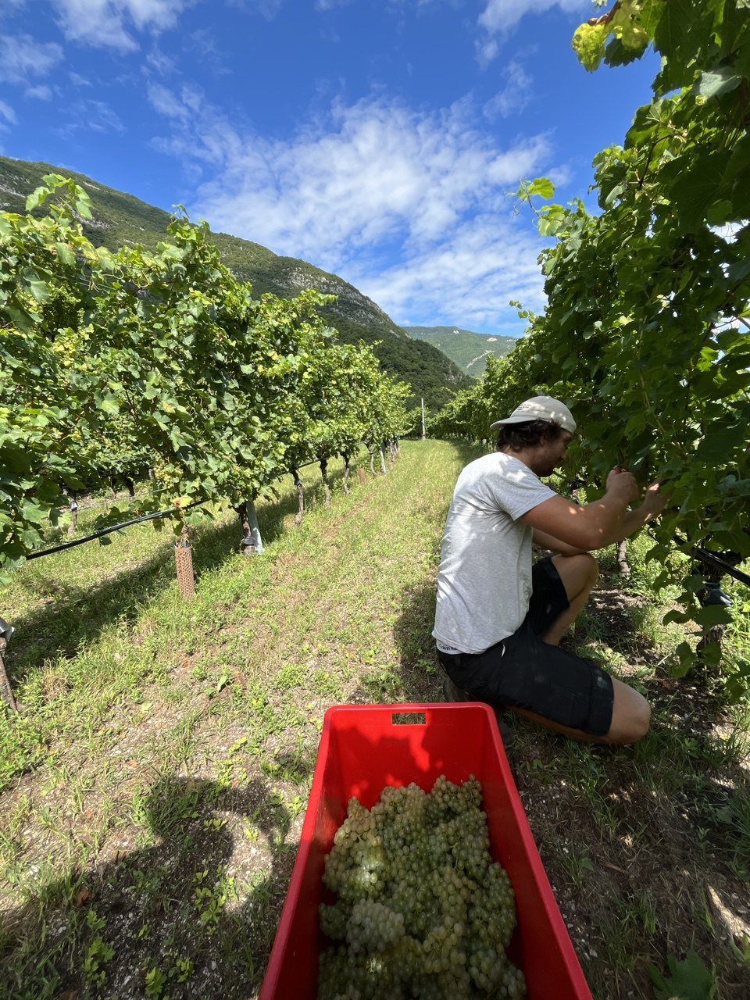
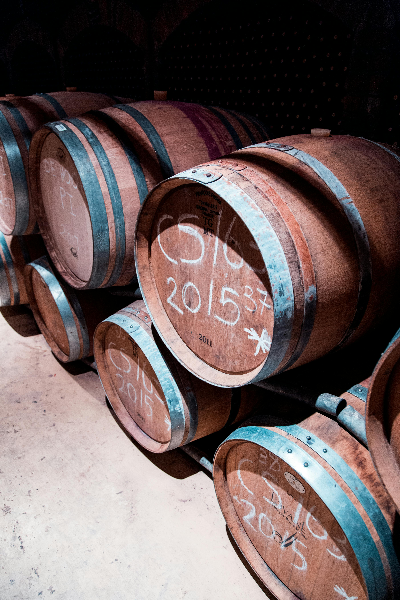

1
Preparazione e pulizia attrezzi
Selezioniamo le migliori uve per iniziare il processo.
2
Vendemmia
La parte più importante, la vendemmia.
3
Trasporto uva in cantina
Trasportiamo l'uva in sentieri e strade impervie nelle vigne.
4
Controllo qualità
Processo di cernita per il controllo qualità dell'uva prima di passarla al torchio.

5
Imbottigliamento
Il vino viene imbottigliato pronto per essere gustato.
